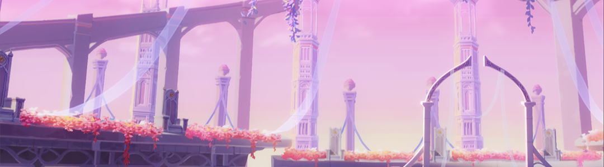

|  |
The memories of the last thirteen Flame-Chasers of the Previous Era rest in this underworld.
From a corner of World Serpent's sacrificial ground, a lightless corridor meandered out,
reaching into a colossal facility buried in the ground.
It was where every agent of World Serpent was baptized to enter a new life.
The memories of the last thirteen Flame-Chasers of the Previous Era rest in this underworld.
And now, the site welcomes a new visitor...
|